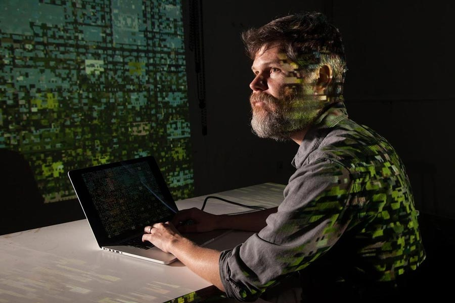

Casey Reas
Código, sistemas y arte generativo contemporáneo

“Una obra puede ser definida como un sistema y ejecutada en múltiples formas.”
— Casey Reas
Casey Reas es un artista, programador y educador reconocido por su trabajo en el desarrollo del arte generativo. Su práctica se basa en la creación de sistemas que, a partir de reglas definidas, producen imágenes y comportamientos visuales autónomos.
Este enfoque desplaza la idea tradicional de obra terminada hacia procesos abiertos y en constante evolución.
Su trabajo se centra en la relación entre instrucciones, ejecución y resultado. A través del uso del código, construye estructuras que permiten explorar variaciones infinitas dentro de un mismo sistema.
De este modo, cada ejecución puede dar lugar a una experiencia visual distinta.
Este enfoque desplaza la idea tradicional de obra terminada hacia procesos abiertos y en constante evolución.
Su trabajo se centra en la relación entre instrucciones, ejecución y resultado. A través del uso del código, construye estructuras que permiten explorar variaciones infinitas dentro de un mismo sistema.
De este modo, cada ejecución puede dar lugar a una experiencia visual distinta.
Sección destacada
El código como herramienta creativa
Además de su producción artística, Casey Reas tuvo un rol clave en la difusión del pensamiento computacional dentro del arte contemporáneo.
Su enfoque promueve la comprensión del código como un medio expresivo, accesible y profundamente creativo.